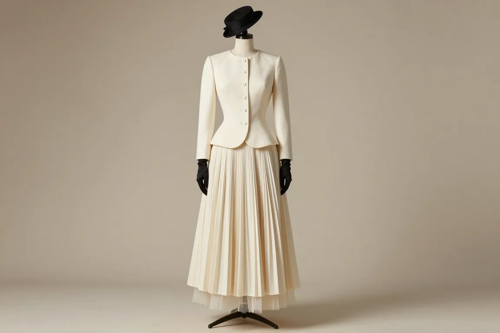

Couture-linjen som Christian Dior viste i februar 1947. Den har runde skuldre, en liten bygget midje og et fullt skjørt til leggen i meter av ull og silke. Den svarte på den rasjonerte, firkantede krigskjolen.

Kjerneidé
Etter rasjoneringen viser en kvinnes kjole overflod: en liten midje, et fullt skjørt og håndarbeidet fra couture-huset.
Designprinsipper
Skjær midjen 5 til 8 cm mindre enn den naturlige midjen, og hold den med et indre belte med bein.
Sett fållen 30 til 40 cm over gulvet, midt på leggen.
Gi et dagsskjørt en fåle på 10 til 25 m, og et aftenskjørt opptil 80 m.
Rund skulderen uten pute; la linjen løpe ned fra halsen i én kurve.
Polstre hoften med en basque, slik at midjen ser mindre ut.
Bygg formen inne i kjolen med lerret, bein og et tyllunderskjørt.
Avslutt hver søm og hver fåle for hånd.
Antimønstre
Firkantede polstrede skuldre fra krigstidens nyttedrakt